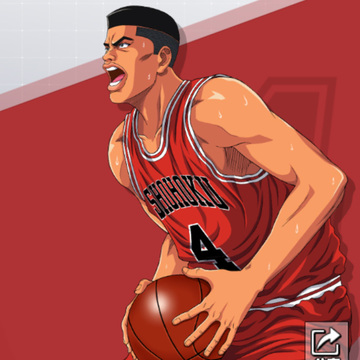
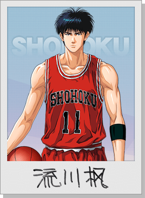

赤木剛憲，籃球隊的隊長，晴子的哥哥，經常先發五人之一，
隊中的位置是中鋒，亦被譽為神奈川縣第一中鋒。

宮城良田湘北高中籃球隊的球員，在隊中的位置是控球後衛。
他擁有後衛敏銳的觀察力及迅捷的身手，是先發球員唯一的二年級。
櫻木花道湘北高中籃球隊的球員，擁有驚人體能，經常自稱「天才」。
櫻木擁有一頭紅髮，經常先發五人之一，隊中的位置是大前鋒。

流川楓是湘北高中籃球隊的球員，經常先發五人之一，在隊中的位置是小前鋒。
天才型球員，非常認真練習，自我要求嚴格。

湘北高中籃球隊的球員，在隊中的位置是得分後衛。
籃球隊的主力隊員之一，擅長三分球投籃。